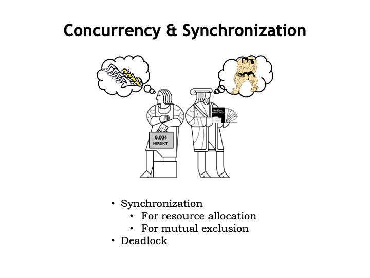
Interprocess Communication
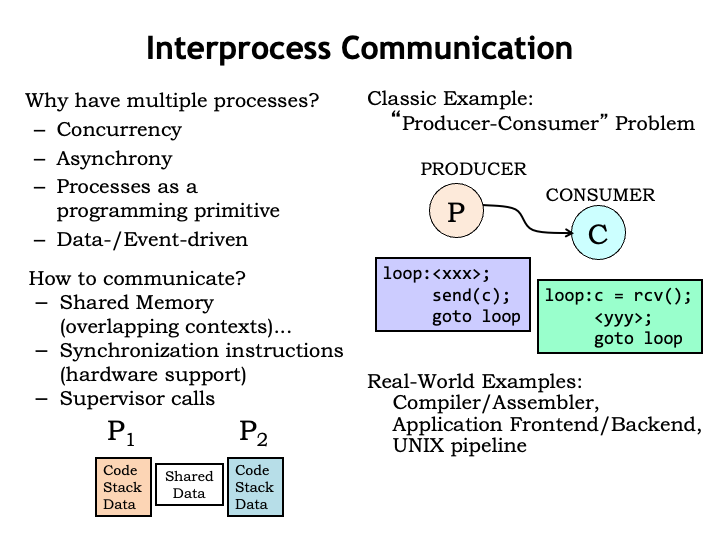
Itʼs not unusual to find that an application is organized as multiple communicating processes. Whatʼs the advantage of using multiple processes instead of just a single process?
Many applications exhibit concurrency, i.e., some of the required computations can be performed in parallel. For example, video compression algorithms represent each video frame as an array of 8-pixel by 8-pixel macroblocks. Each macroblock is individually compressed by converting the 64 intensity and color values from the spatial domain to the frequency domain and then quantizing and Huffman encoding the frequency coefficients. If youʼre using a multi-core processor to do the compression, you can perform the macroblock compressions concurrently.
Applications like video games are naturally divided into the front-end user interface and back-end simulation and rendering engines. Inputs from the user arrive asynchronously with respect to the simulation and itʼs easiest to organize the processing of user events separately from the backend processing.
Processes are an effective way to encapsulate the state and computation for what are logically independent components of an application, which communicate with one another when they need to share information.
These sorts of applications are often data- or event-driven, i.e., the processing required is determined by the data to be processed or the arrival of external events.
How should the processes communicate with each other?
If the processes are running out of the same physical memory, it would be easy to arrange to share memory data by mapping the same physical page into the contexts for both processes. Any data written to that page by one process will be able to be read by the other process.
To make it easier to coordinate the processesʼ communicating via shared memory, weʼll see itʼs convenient to provide synchronization primitives. Some ISAs include instructions that make it easy to do the required synchronization.
Another approach is to add OS supervisor calls to pass messages from one process to another. Message passing involves more overhead than shared memory, but makes the application programming independent of whether the communicating processes are running on the same physical processor.
In this lecture, weʼll use the classic producer-consumer problem as our example of concurrent processes that need to communicate and synchronize. There are two processes: a producer and a consumer. The producer is running in a loop, which performs some computation <xxx> to generate information, in this case, a single character C. The consumer is also running a loop, which waits for the next character to arrive from the producer, then performs some computation <yyy>.
The information passing between the producer and consumer could obviously be much more complicated than a single character. For example, a compiler might produce a sequence of assembly language statements that are passed to the assembler to be converted into the appropriate binary representation. The user interface front-end for a video game might pass a sequence of player actions to the simulation and rendering back-end. In fact, the notion of hooking multiple processes together in a processing pipeline is so useful that the Unix and Linux operating systems provide a PIPE primitive in the operating system that connects the output channel of the upstream process to the input channel of the downstream process.
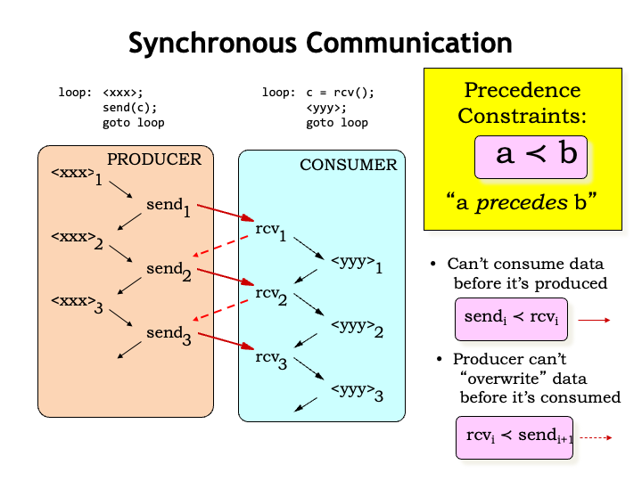
Letʼs look at a timing diagram for the actions of our simple producer/consumer example. Weʼll use arrows to indicate when one action happens before another. Inside a single process, e.g., the producer, the order of execution implies a particular ordering in time: the first execution of <xxx> is followed by the sending of the first character. Then thereʼs the second execution of <xxx>, followed by the sending of the second character, and so on. In later examples, weʼll omit the timing arrows between successive statements in the same program.
We see a similar order of execution in the consumer: the first character is received, then the computation <yyy> is performed for the first time, etc. Inside of each process, the processʼ program counter is determining the order in which the computations are performed.
So far, so good - each process is running as expected. However, for the producer/consumer system to function correctly as a whole, weʼll need to introduce some additional constraints on the order of execution. These are called precedence constraints and weʼll use this stylized less-than sign to indicate that computation A must precede, i.e., come before, computation B.
In the producer/consumer system we canʼt consume data before itʼs been produced, a constraint we can formalize as requiring that the ith send operation has to precede the ith receive operation. This timing constraint is shown as the solid red arrow in the timing diagram.
Assuming weʼre using, say, a shared memory location to hold the character being transmitted from the producer to the consumer, we need to ensure that the producer doesnʼt overwrite the previous character before itʼs been read by the consumer. In other words, we require the ith receive to precede the i+1st send. These timing constraints are shown as the dotted red arrows in the timing diagram.
Together these precedence constraints mean that the producer and consumer are tightly coupled in the sense that a character has to be read by the consumer before the next character can be sent by the producer, which might be less than optimal if the <xxx> and <yyy> computations take a variable amount of time. So letʼs see how we can relax the constraints to allow for more independence between the producer and consumer.
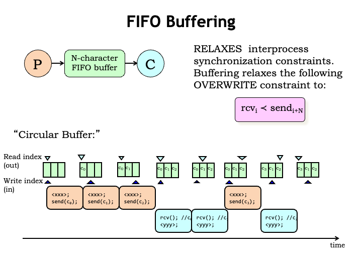
We can relax the execution constraints on the producer and consumer by having them communicate via N-character first-in-first-out (FIFO) buffer. As the producer produces characters it inserts them into the buffer. The consumer reads characters from the buffer in the same order as they were produced. The buffer can hold between 0 and N characters. If the buffer holds 0 characters, itʼs empty; if it holds N characters, itʼs full. The producer should wait if the buffer is full, the consumer should wait if the buffer is empty.
Using the N-character FIFO buffer relaxes our second overwrite constraint to the requirement that the ith receive must happen before i+Nth send. In other words, the producer can get up to N characters ahead of the consumer.
FIFO buffers are implemented as an N-element character array with two indices: the read index indicates the next character to be read, the write index indicates the next character to be written. Weʼll also need a counter to keep track of the number of characters held by the buffer, but thatʼs been omitted from this diagram. The indices are incremented modulo N, i.e., the next element to be accessed after the N-1st element is the 0th element, hence the name circular buffer.
Hereʼs how it works. The producer runs, using the write index to add the first character to the buffer. The producer can produce additional characters, but must wait once the buffer is full.
The consumer can receive a character anytime the buffer is not empty, using the read index to keep track of the next character to be read. Execution of the producer and consumer can proceed in any order so long as the producer doesnʼt write into a full buffer and the consumer doesnʼt read from any empty buffer.
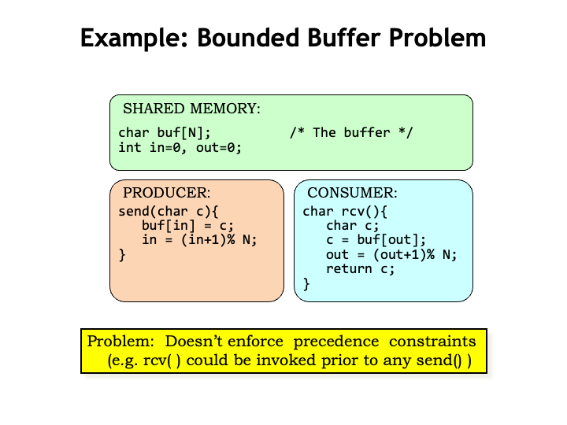
Hereʼs what the code for the producer and consumer might look like. The array and indices for the circular buffer live in shared memory where they can be accessed by both processes. The SEND routine in the producer uses the write index IN to keep track of where to write the next character. Similarly the RCV routine in the consumer uses the read index OUT to keep track of the next character to be read. After each use, each index is incremented modulo N.
The problem with this code is that, as currently written, neither of the two precedence constraints is enforced. The consumer can read from an empty buffer and the producer can overwrite entries when the buffer is full.
Weʼll need to modify this code to enforce the constraints and for that weʼll introduce a new programming construct that weʼll use to provide the appropriate inter-process synchronization.
Semaphores
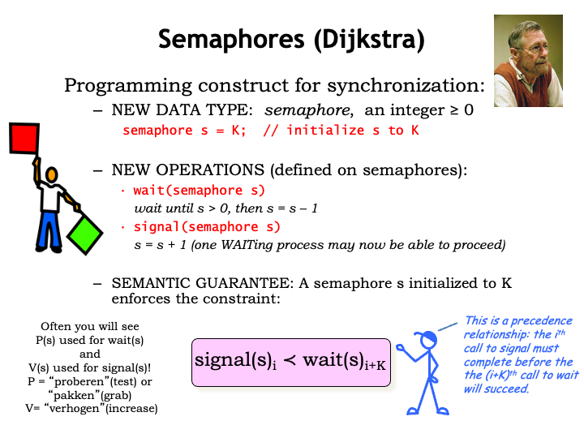
What weʼd like to do is to create a single abstraction that can be used to address all our synchronization needs. In the early 1960ʼs, the Dutch computer scientist Edsger Dijkstra proposed a new abstract data type called the semaphore, which has an integer value greater than or equal to 0. A programmer can declare a semaphore as shown here, specifying its initial value. The semaphore lives in a memory location shared by all the processes that need to synchronize their operation.
The semaphore is accessed with two operations: WAIT and SIGNAL. The WAIT operation will wait until the specified semaphore has a value greater than 0, then it will decrement the semaphore value and return to the calling program. If the semaphore value is 0 when WAIT is called, conceptually execution is suspended until the semaphore value is non-zero. In a simple (inefficient) implementation, the WAIT routine loops, periodically testing the value of the semaphore, proceeding when its value is non-zero.
The SIGNAL operation increments the value of the specified semaphore. If there any processes WAITing on that semaphore, exactly one of them may now proceed. Weʼll have to be careful with the implementation of SIGNAL and WAIT to ensure the “exactly one” constraint is satisfied, i.e., that two processes both WAITing on the same semaphore wonʼt both think they can decrement it and proceed after a SIGNAL.
A semaphore initialized with the value K guarantees that the ith call to SIGNAL will precede (i+K)th call to WAIT. In a moment, weʼll see some concrete examples that will make this clear. Note that in Computation Structures, weʼre ruling out semaphores with negative values.
In the literature, you may see P(s) used in place of WAIT(s) and V(s) used in place of SIGNAL(s). These operation names are derived from the Dutch words for “test” and “increase”.
Letʼs see how to use semaphores to implement precedence constraints.
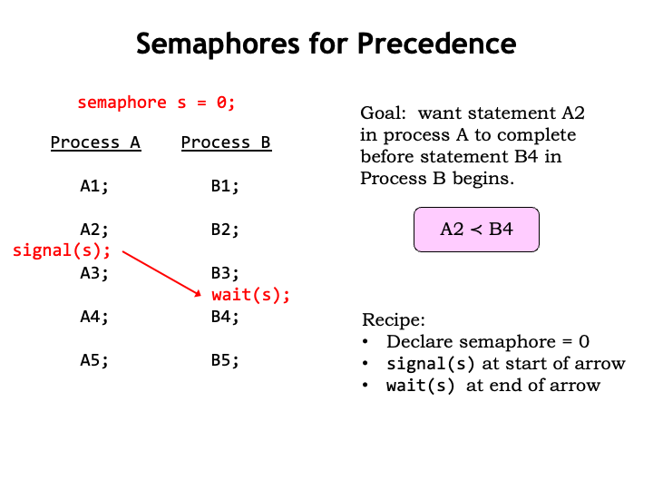
Here are two processes, each running a program with 5 statements. Execution proceeds sequentially within each process, so A1 executes before A2, and so on. But there are no constraints on the order of execution between the processes, so statement B1 in Process B might be executed before or after any of the statements in Process A. Even if A and B are running in a timeshared environment on a single physical processor, execution may switch at any time between processes A and B.
Suppose we wish to impose the constraint that the execution of statement A2 completes before execution of statement B4 begins. The red arrow shows the constraint we want.
Hereʼs the recipe for implementing this sort of simple precedence constraint using semaphores.
First, declare a semaphore (called “s” in this example) and initialize its value to 0.
Place a call to signal(s) at the start of the arrow. In this example, signal(s) is placed after the statement A2 in process A.
Then place a call to wait(s) at the end of the arrow. In this example, wait(s) is placed before the statement B4 in process B.
With these modifications, process A executes as before, with the signal to semaphore s happening after statement A2 is executed.
Statements B1 through B3 also execute as before, but when the wait(s) is executed, execution of process B is suspended until the signal(s) statement has finished execution. This guarantees that execution of B4 will start only after execution of A2 has completed.
By initializing the semaphore s to 0, we enforced the constraint that the first call to signal(s) had to complete before the first call to wait(s) would succeed.
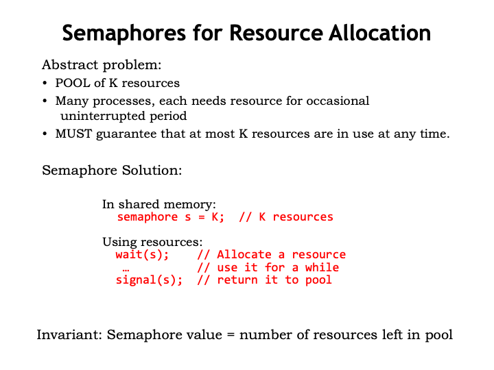
Another way to think about semaphores is as a management tool for a shared pool of K resources, where K is the initial value of the semaphore. You use the SIGNAL operation to add or return resources to the shared pool. And you use the WAIT operation to allocate a resource for your exclusive use.
At any given time, the value of the semaphore gives the number of unallocated resources still available in the shared pool.
Note that the WAIT and SIGNAL operations can be in the same process, or they may be in different processes, depending on when the resource is allocated and returned.
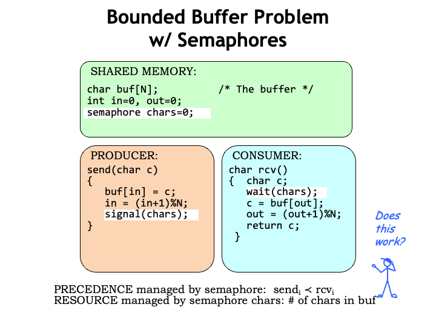
We can use semaphores to manage our N-character FIFO buffer. Here weʼve defined a semaphore CHARS and initialized it to 0. The value of CHARS will tell us how many characters are in the buffer.
So SEND does a signal(CHARS) after it has added a character to the buffer, indicating the buffer now contains an additional character.
And RCV does a wait(CHARS) to ensure the buffer has at least one character before reading from the buffer.
Since CHARS was initialized to 0, weʼve enforced the constraint that the ith call to signal(CHARS) precedes the completion of the ith call to wait(CHARS). In other words, RCV canʼt consume a character until it has been placed in the buffer by SEND.
Does this mean our producer and consumer are now properly synchronized? Almost! Using the CHARS semaphore, we implemented *one* of the two precedence constraints we identified as being necessary for correct operation. Next weʼll see how to implement the other precedence constraint.
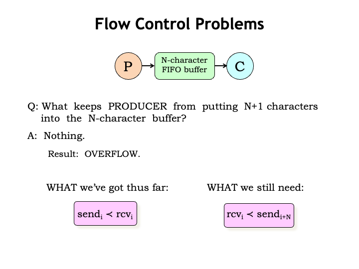
What keeps the producer from putting more than N characters into the N-character buffer? Nothing. Oops, the producer can start to overwrite characters placed in the buffer earlier even though they havenʼt yet been read by the consumer. This is called buffer overflow and the sequence of characters transmitted from producer to consumer becomes hopelessly corrupted.
What weʼve guaranteed so far is that the consumer can read a character only after the producer has placed it in the buffer, i.e., the consumer canʼt read from an empty buffer.
What we still need to guarantee is that the producer canʼt get too far ahead of the consumer. Since the buffer holds at most N characters, the producer canʼt send the (i+N)th character until the consumer has read the ith character.
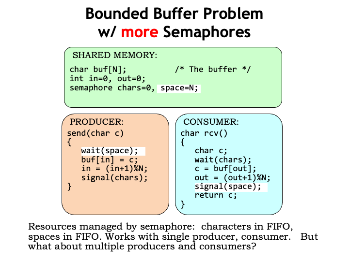
Here weʼve added a second semaphore, SPACES, to manage the number of spaces in the buffer. Initially the buffer is empty, so it has N spaces. The producer must WAIT for a space to be available. When SPACES in non-zero, the WAIT succeeds, decrementing the number of available spaces by one and then the producer fills that space with the next character.
The consumer signals the availability of another space after it reads a character from the buffer.
Thereʼs a nice symmetry here. The producer consumes spaces and produces characters. The consumer consumes characters and produces spaces. Semaphores are used to track the availability of both resources (i.e., characters and spaces), synchronizing the execution of the producer and consumer.
This works great when there is a single producer process and a single consumer process. Next weʼll think about what will happen if we have multiple producers and multiple consumers.
Atomic Transactions
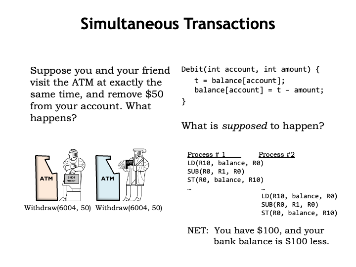
Letʼs take a moment to look at a different example. Automated teller machines allow bank customers to perform a variety of transactions: deposits, withdrawals, transfers, etc. Letʼs consider what happens when two customers try to withdraw $50 from the same account at the same time.
A portion of the bankʼs code for a withdrawal transaction is shown in the upper right. This code is responsible for adjusting the account balance to reflect the amount of the withdrawal. Presumably the check to see if there is sufficient funds has already happened.
Whatʼs supposed to happen? Letʼs assume that the bank is using a separate process to handle each transaction, so the two withdrawal transactions cause two different processes to be created, each of which will run the Debit code. If each of the calls to Debit run to completion without interruption, we get the desired outcome: the first transaction debits the account by $50, then the second transaction does the same. The net result is that you and your friend have $100 and the balance is $100 less.
So far, so good.
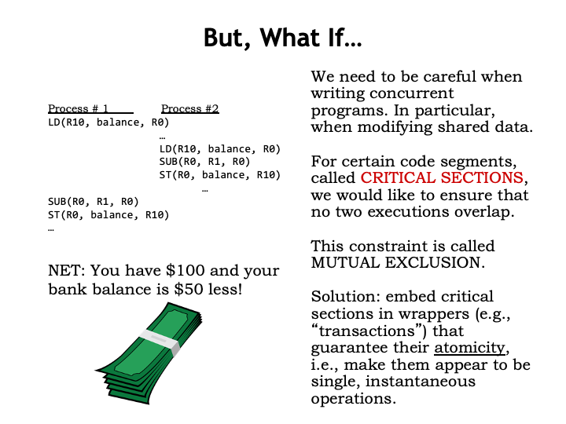
But what if the process for the first transaction is interrupted just after itʼs read the balance? The second process subtracts $50 from the balance, completing that transaction. Now the first process resumes, using the now out-of-date balance it loaded just before being interrupted. The net result is that you and your friend have $100, but the balance has only been debited by $50.
The moral of the story is that we need to be careful when writing code that reads and writes shared data since other processes might modify the data in the middle of our execution. When, say, updating a shared memory location, weʼll need to LD the current value, modify it, then ST the updated value. We would like to ensure that no other processes access the shared location between the start of the LD and the completion of the ST. The LD/modify/ST code sequence is what we call a critical section. We need to arrange that other processes attempting to execute the same critical section are delayed until our execution is complete. This constraint is called mutual exclusion, i.e., only one process at a time can be executing code in the same critical section.
Once weʼve identified critical sections, weʼll use semaphores to guarantee they execute atomically, i.e., that once execution of the critical section begins, no other process will be able to enter the critical section until the execution is complete. The combination of the semaphore to enforce the mutual exclusion constraint and the critical section of code implement whatʼs called a transaction. A transaction can perform multiple reads and writes of shared data with the guarantee that none of the data will be read or written by other processes while the transaction is in progress.
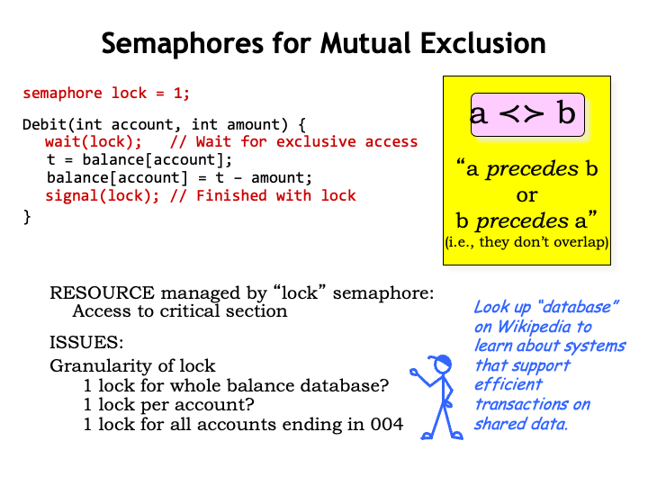
Hereʼs the original code to Debit, which weʼll modify by adding a LOCK semaphore. In this case, the resource controlled by the semaphore is the right to run the code in the critical section. By initializing LOCK to 1, weʼre saying that at most one process can execute the critical section at a time.
A process running the Debit code WAITs on the LOCK semaphore. If the value of LOCK is 1, the WAIT will decrement value of LOCK to 0 and let the process enter the critical section. This is called acquiring the lock. If the value of LOCK is 0, some other process has acquired the lock and is executing the critical section and our execution is suspended until the LOCK value is non-zero.
When the process completes execution of the critical section, it releases the LOCK with a call to SIGNAL, which will allow other processes to enter the critical section. If there are multiple WAITing processes, only one will be able to acquire the lock, and the others will still have to wait their turn.
Used in this manner, semaphores are implementing a mutual exclusion constraint, i.e., thereʼs a guarantee that two executions of the critical section cannot overlap. Note that if multiple processes need to execute the critical section, they may run in any order and the only guarantee is that their executions will not overlap.
There are some interesting engineering issues to consider. Thereʼs the question of the granularity of the lock, i.e., what shared data is controlled by the lock? In our bank example, should there be one lock controlling access to the balance for all accounts? That would mean that no one could access any balance while a transaction was in progress. That would mean that transactions accessing different accounts would have to run one after the other even though theyʼre accessing different data. So one lock for all the balances would introduce unnecessary precedence constraints, greatly slowing the rate at which transactions could be processed.
Since the guarantee we need is that we shouldnʼt permit multiple simultaneous transactions on the same account, it would make more sense to have a separate lock for each account, and change the Debit code to acquire the accountʼs lock before proceeding. That will only delay transactions that truly overlap, an important efficiency consideration for a large system processing many thousands of mostly non-overlapping transactions each second.
Of course, having per-account locks would mean a lot of locks! If thatʼs a concern, we can adopt a compromise strategy of having locks that protect groups of accounts, e.g., accounts with same last three digits in the account number. That would mean weʼd only need 1000 locks, which would allow up to 1000 transactions to happen simultaneously.
The notion of transactions on shared data is so useful that we often use a separate system called a database that provides the desired functionality. Database systems are engineered to provide low-latency access to shared data, providing the appropriate transactional semantics. The design and implementation of databases and transactions is pretty interesting - to follow up, I recommend reading about databases on the web.
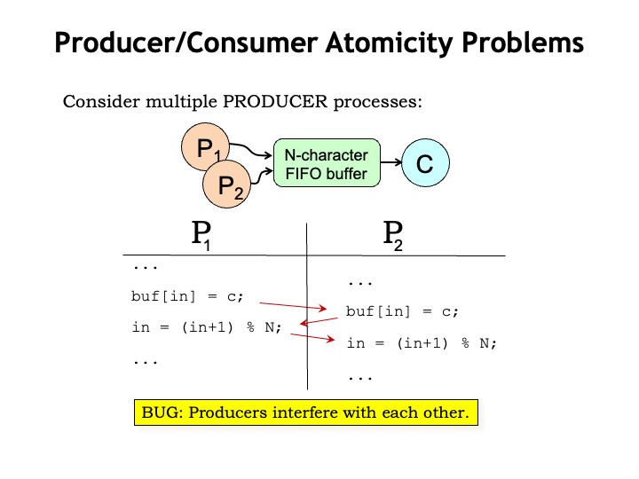
Returning to our producer/consumer example, we see that if multiple producers are trying to insert characters into the buffer at the same time, itʼs possible that their execution may overlap in a way that causes characters to be overwritten and/or the index to be improperly incremented.
We just saw this bug in the bank example: the producer code contains a critical section of code that accesses the FIFO buffer and we need to ensure that the critical section is executed atomically.
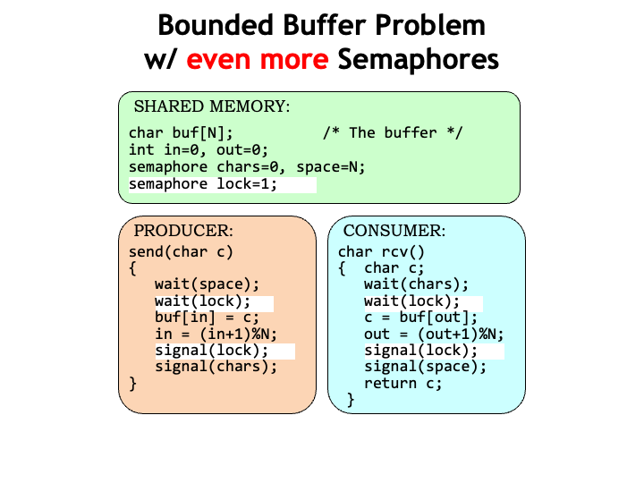
Here weʼve added a third semaphore, called LOCK, to implement the necessary mutual exclusion constraint for the critical section of code that inserts characters into the FIFO buffer. With this modification, the system will now work correctly when there are multiple producer processes.
Thereʼs a similar issue with multiple consumers, so weʼve used the same LOCK to protect the critical section for reading from the buffer in the RCV code.
Using the same LOCK for producers and consumers will work, but does introduce unnecessary precedence constraints since producers and consumers use different indices, i.e., IN for producers and OUT for consumers. To solve this problem we could use two locks: one for producers and one for consumers.
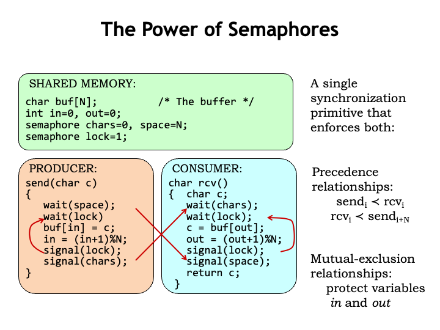
Semaphores are a pretty handy Swiss army knife when it comes to dealing with synchronization issues. When WAIT and SIGNAL appear in different processes, the semaphore ensures the correct execution timing between processes. In our example, we used two semaphores to ensure that consumers canʼt read from an empty buffer and that producers canʼt write into a full buffer.
We also used semaphores to ensure that execution of critical sections - in our example, updates of the indices IN and OUT - were guaranteed to be atomic. In other words, that the sequence of reads and writes needed to increment a shared index would not be interrupted by another process between the initial read of the index and the final write.
Semaphore Implementation
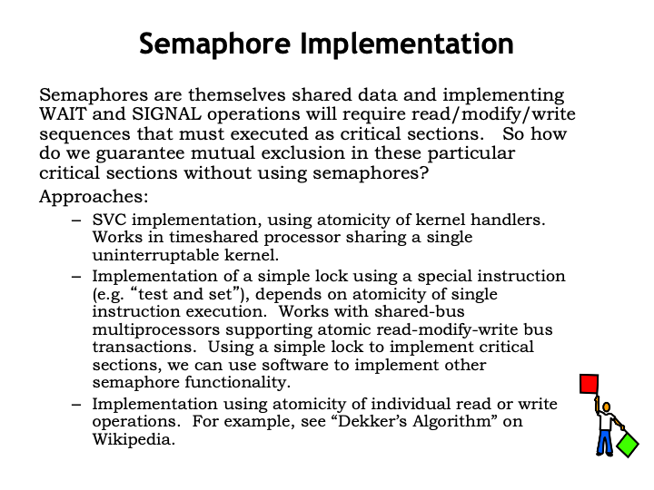
Now letʼs figure out how to implement semaphores. They are themselves shared data and implementing the WAIT and SIGNAL operations will require read/modify/write sequences that must be executed as critical sections. Normally weʼd use a lock semaphore to implement the mutual exclusion constraint for critical sections. But obviously we canʼt use semaphores to implement semaphores! We have whatʼs called a bootstrapping problem: we need to implement the required functionality from scratch.
Happily, if weʼre running on a timeshared processor with an uninterruptible OS kernel, we can use the supervisor call (SVC) mechanism to implement the required functionality.
We can also extend the ISA to include a special test-and-set instruction that will let us implement a simple lock semaphore, which can then be used to protect critical sections that implement more complex semaphore semantics. Single instructions are inherently atomic and, in a multi-core processor, will do what we want if the shared main memory supports both reading the old value and writing a new value to a specific memory location as a single memory access.
There are other, more complex, software-only solutions that rely only on the atomicity of individual reads and writes to implement a simple lock. For example, see “Dekkerʼs Algorithm” on Wikipedia.
Weʼll look in more detail at the first two approaches.
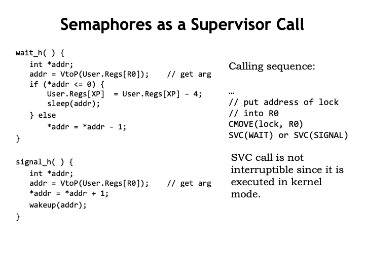
Here are the OS handlers for the WAIT and SIGNAL supervisor calls. Since SVCs are run kernel mode, they canʼt be interrupted, so the handler code is naturally executed as a critical section.
Both handlers expect the address of the semaphore location to be passed as an argument in the userʼs R0. The WAIT handler checks the semaphoreʼs value and if itʼs non-zero, the value is decremented and the handler resumes execution of the userʼs program at the instruction following the WAIT SVC. If the semaphore is 0, the code arranges to re-execute the WAIT SVC when the user program resumes execution and then calls SLEEP to mark the process as inactive until the corresponding WAKEUP call is made.
The SIGNAL handler is simpler: it increments the semaphore value and calls WAKEUP to mark as active any processes that were WAITing for this particular semaphore.
Eventually the round-robin scheduler will select a process that was WAITing and it will be able to decrement the semaphore and proceed. Note that the code makes no provision for fairness, i.e., thereʼs no guarantee that a WAITing process will eventually succeed in finding the semaphore non-zero. The scheduler has a specific order in which it runs processes, so the next-in-sequence WAITing process will always get the semaphore even if there are later-in-sequence processes that have been WAITing longer. If fairness is desired, WAIT could maintain a queue of waiting processes and use the queue to determine which process is next in line, independent of scheduling order.
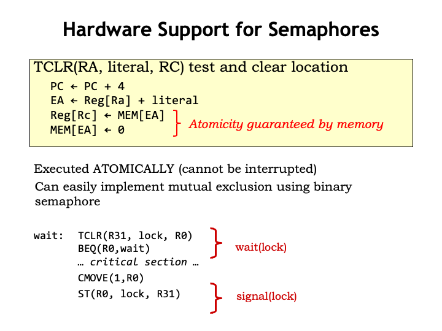
Many ISAs support an instruction like the TEST-and-CLEAR instruction shown here. The TCLR instruction reads the current value of a memory location and then sets it to zero, all as a single operation. Itʼs like a LD except that it zeros the memory location after reading its value.
To implement TCLR, the memory needs to support read-and-clear operations, as well as normal reads and writes.
The assembly code at the bottom of the slide shows how to use TCLR to implement a simple lock. The program uses TCLR to access the value of the lock semaphore. If the returned value in RC is zero, then some other process has the lock and the program loops to try TCLR again. If the returned value is non-zero, the lock has been acquired and execution of the critical section can proceed. In this case, TCLR has also set the lock to zero, so that other processes will be prevented from entering the critical section.
When the critical section has finished executing, a ST instruction is used to set the semaphore to a non-zero value.
Dealing with Deadlock
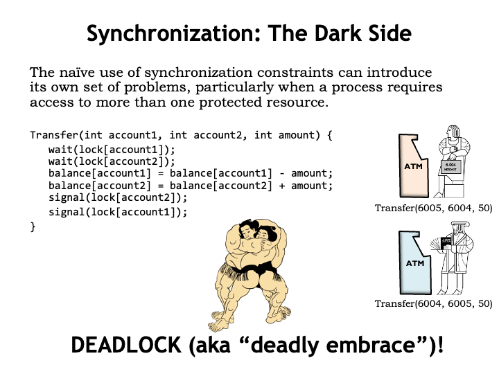
If the necessary synchronization requires acquiring more than one lock, there are some special considerations that need to be taken into account. For example, the code below implements the transfer of funds from one bank account to another. The code assumes there is a separate semaphore lock for each account and since it needs to adjust the balance of two accounts, it acquires the lock for each account.
Consider what happens if two customers try simultaneous transfers between their two accounts. The top customer will try to acquire the locks for accounts 6005 and 6004. The bottom customer tries to acquire the same locks, but in the opposite order. Once a customer has acquired both locks, the transfer code will complete, releasing the locks.
But what happens if the top customer acquires his first lock (for account 6005) and the bottom customer simultaneously acquires his first lock (for account 6004). So far, so good, but now each customer will be not be successful in acquiring their second lock, since those locks are already held by the other customer!
This situation is called a deadlock or deadly embrace because there is no way execution for either process will resume - both will wait indefinitely to acquire a lock that will never be available.
Obviously, synchronization involving multiple resources requires a bit more thought.
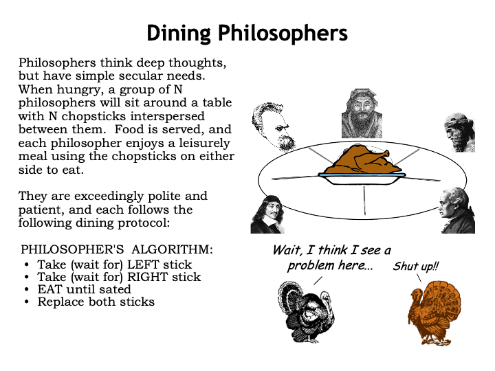
The problem of deadlock is elegantly illustrated by the Dining Philosophers problem. Here there are, say, 5 philosophers waiting to eat. Each requires two chopsticks in order to proceed, and there are 5 chopsticks on the table.
The philosophers follow a simple algorithm. First they pick up the chopstick on their left, then the chopstick on their right. When they have both chopsticks they eat until theyʼre done, at which point they return both chopsticks to the table, perhaps enabling one of their neighbors to pick them up and begin eating. Again, we see the basic setup of needing two (or more) resources before the task can complete.
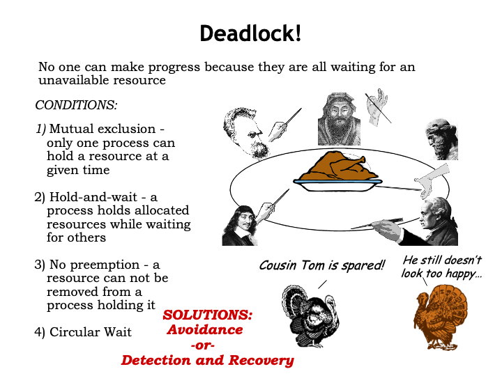
Hopefully you can see the problem that may arise...
If all philosophers pick up the chopstick on their left, then all the chopsticks have been acquired, and none of the philosophers will be able to acquire their second chopstick and eat. Another deadlock!
Here are the conditions required for a deadlock:
1. Mutual exclusion, where a particular resource can only be acquired by one process at a time.
2. Hold-and-wait, where a process holds allocated resources while waiting to acquire the next resource.
3. No preemption, where a resource cannot be removed from the process which acquired it. Resources are only released after the process has completed its transaction.
4. Circular wait, where resources needed by one process are held by another, and vice versa.
How can we solve the problem of deadlocks when acquiring multiple resources? Either we avoid the problem to begin with, or we detect that deadlock has occurred and implement a recovery strategy. Both techniques are used in practice.
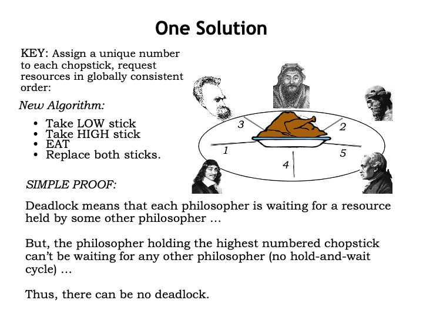
In the Dining Philosophers problem, deadlock can be avoided with a small modification to the algorithm. We start by assigning a unique number to each chopstick to establish a global ordering of all the resources, then rewrite the code to acquire resources using the global ordering to determine which resource to acquire first, which second, and so on.
With the chopsticks numbered, the philosophers pick up the lowest-numbered chopstick from either their left or right. Then they pick up the other, higher-numbered chopstick, eat, and then return the chopsticks to the table.
How does this avoid deadlock? Deadlock happens when all the chopsticks have been picked up but no philosopher can eat. If all the chopsticks have been been picked up, that means some philosopher has picked up the highest-numbered chopstick and so must have earlier picked up the lower-numbered chopstick on his other side. So that philosopher can eat then return both chopsticks to the table, breaking the hold-and-wait cycle.
So if all the processes in the system can agree upon a global ordering for the resources they require, then acquire them in order, there will be no possibility of a deadlock caused by a hold-and-wait cycle.
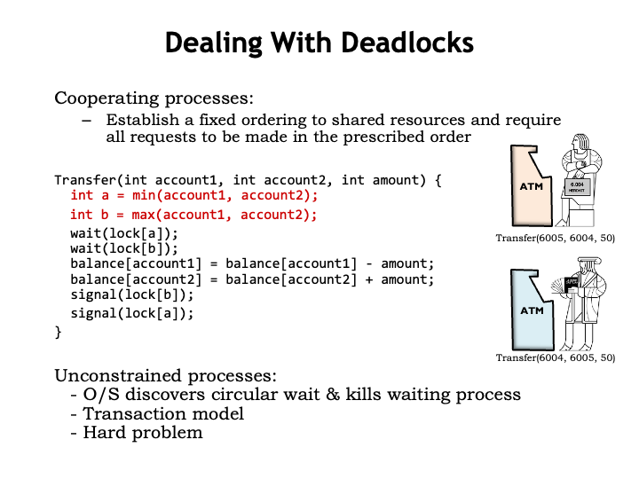
A global ordering is easy to arrange in our banking code for the transfer transaction. Weʼll modify the code to first acquire the lock for the lower-numbered account, then acquire the lock for the higher-numbered account. Now, both customers will first try to acquire the lock for the 6004 account. The customer that succeeds then can acquire the lock for the 6005 account and complete the transaction. The key to deadlock avoidance was that customers contented for the lock for the *first* resource they both needed - acquiring that lock ensured they would be able to acquire the remainder of the shared resources without fear that they would already be allocated to another process in a way that could cause a hold-and-wait cycle.
Establishing and using a global order for shared resources is possible when we can modify all processes to cooperate. Avoiding deadlock without changing the processes is a harder problem. For example, at the operating system level, it would be possible to modify the WAIT SVC to detect circular wait and terminate one of the WAITing processes, releasing its resources and breaking the deadlock.
The other strategy we mentioned was detection and recovery. Database systems detect when thereʼs been an external access to the shared data used by a particular transaction, which causes the database to abort the transaction. When issuing a transaction to a database, the programmer specifies what should happen if the transaction is aborted, e.g., she can specify that the transaction be retried. The database remembers all the changes to shared data that happen during a transaction and only changes the primary copy of the shared data when it is sure that the transaction will not be aborted, at which point the changes are committed to the database.
Summary
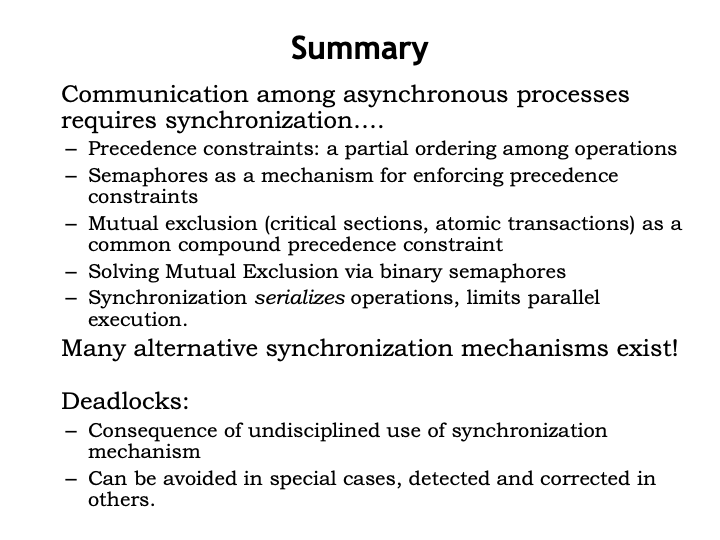
In summary, we saw that organizing an application as communicating processes is often a convenient way to go. We used semaphores to synchronize the execution of the different processes, providing guarantees that certain precedence constraints would be met, even between statements in different processes.
We also introduced the notion of critical code sections and mutual exclusion constraints that guaranteed that a code sequence would be executed without interruption by another process. We saw that semaphores could also be used to implement those mutual exclusion constraints.
Finally we discussed the problem of deadlock that can occur when multiple processes must acquire multiple shared resources, and we proposed several solutions based on a global ordering of resources or the ability to restart a transaction.
Synchronization primitives play a key role in the world of big data where there are vast amounts of shared data, or when trying to coordinate the execution of thousands of processes in the cloud. Understanding synchronization issues and their solutions is a key skill when writing most modern applications.